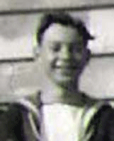

By Geoff Barnes

I had always wanted to serve in the
Royal Navy. As a young lad in the mid-thirties I was on vacation in Weymouth.
The Fleet Review had taken place at Spithead and the Home Fleet was dispersing
to it's various home ports. Weymouth Bay was filled with battleships, carriers,
cruisers and destroyers and I was there gazing in awe at this sight of naval
power. Thousands of sailors on shore leave and making the most of the
opportunity. So it was inevitable that when I was called up Dec 6 1945 I had
opted for the Navy. In due time this lead me to 812 Squadron and HMS Theseus and
a defining period of my life.
I counted myself incredibly lucky. Against all advice I had successfully
volunteered for Foreign Service and was to join the 14th Carrier Air Group. This
was to embark in HMS Theseus for the far East going as far as Australia and New
Zealand. All this luck at a time when the Fleet was demobilising and the chances
of a ship draft for a National Serviceman were dim. To say that I enjoyed the
experience is to put it mildly. My shipmates came from every walk of life and
there wasn't one I didn't like. We worked hard at sea and had barrels of laughs
ashore. The Naval preoccupation with time-keeping and of course the discipline
have stayed with me all my life. However there was one time during the Cruise
when life for me took an unexpected turn for the worse.
We had left New Zealand in our wake, sailing north to Honiara in the Solomon's
.then to Port Moresby New Guinea. We then passed through the Endeavour Straits
at the northern tip of Australia into the Arafura Sea for the run up to
Singapore. On my day of destiny I was the Mess Cook. My duties included
collecting and serving out the days meals and cleaning up the Mess Flat before
reporting for duty. Ships were not air-conditioned in those days so you can
imagine the heat in those Latitudes. Eventually I finished and staggered
sweatily up to the Weather Deck for a much-needed cool-off and smoke. I had
hardly taken the first puff when a heavy hand descended on my shoulder and I was
asked if I knew the Ship was petrol-venting. My heart sank because the Ships
Company had recently been read the Riot Act about smoking during venting. There
had been some serious explosions on American Carriers and the Royal Navy had
imposed a zero-tolerance ban. This was a "clear Lower Deck" offence and within
an hour I was standing in front of a court of Officers with my shipmates there
to witness my Sentence.
My feeble defence of "didn't hear the Pipe sir" was brushed aside and I was
sentenced to 7 days cells. Five minutes later I was locked up the bow, two decks
below the Flight Deck. My Cell was one of six, the rest unoccupied. It was quite
small and contained a steel cot, less springs, and a wooden block for a pillow.
I was soon to learn that I had left the 20th Century and joined Nelsons 18th and
19th Century Navy. Daily routine was as follows: Roused at 5am to scrub out the
entire cell area. 7am the days food arrived in the shape of water and ships
biscuits. The latter were about 5" square and were like armour-plate. They would
have defied the jaws of a bull mastiff and had to be soaked several hours in
water to be sufficiently softened. 8am the days work arrived. This was about 20
lengths of tarred oakum to be shredded. Shredded oakum was used in the days of
wooden ships to hammer into the deck seams together with hot tar. Now this
shredding job was serious business. You couldn't half do it. All the blocks had
to be completely shredded and the only tools were your fingers and rapidly
disappearing fingernails. The work usually took 'till about 6pm, by which time I
was cocooned in a cell-full of shredded oakum. It was upsetting to know that my
days work was then thrown overboard.
My reward was an hours exercise on the Flight Deck, under close guard less I
escape, and then to bed. I soon discovered that I was not alone. Apparently
there was a Motorway for rats at the hull side of my cell. Where they were going
and coming from was a mystery. My defence was my trusty wooden pillow which I
hurled with great skill but with no confirmed kills. The noise of that great
chunk of wood reverberating through the ship in the middle of the night must
have caused some comment. I complained about the rats to Jimmy the One (the
second in command) during his cell inspection. He asked if I had any complaints.
I knew there was not much use complaining about the food, but thought the rat
problem had some merit. He was interested and asked if I had caught any.
I remember with gratitude my Shipmates. How they did it I don't know but they
smuggled in food treats and cigarettes which I hid in the bulkhead. I'm sure the
Master-at-Arms Office knew from past experience of this practise. When they
inspected my cell each day they checked everything except the most obvious
hiding places. But that was the Navy way. You served your time and nobody held
it against you. It was as if it never happened. Eventually my 7 days were up.
What had started out as an upsetting experience for a 19 year old became old
hat. But I did regret missing my last week aboard Theseus in an active role,
because when when we arrived at Singapore we were drafted ashore for passage
home. That journey in the Dutch merchant ship MV Sloterdyjk was another story
perhaps to be told..